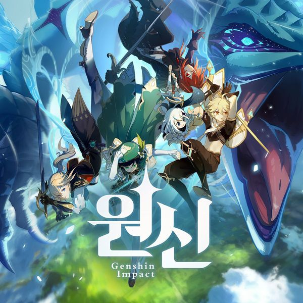

원신
원신에 대한 내용이 들어갈 자리.
| 원신 | |
|  | |
| 개발 | 미호요 |
| 유통 | miHoYo Ltd |
| 플랫폼 | 윈도우/모바일 |
| 장르 | 3인칭 오픈월드 액션 어드벤처 |
| 출시 | 2020년 9월 15일 |
| 한국어 지원 | 지원 |
| 심의 등급 | 15세 이용가 |
| 관련 사이트 | 공식홈페이지,카페,트위터, 유튜브, 페이스북 |
1. 소개
붕괴학원2와 붕괴3rd의 개발사인 miHoYo에서 제작한 3D 오픈 월드 액션 어드벤처 게임.
2. 시스템 요구 사항
2021년 2월 12일 공식 홈페이지 PC버전 기준
| 구분 | 최소 사양 | 권장 사양 |
| CPU | Intel Core i5 | Intel Core i7 |
| 그래픽 카드 | NVIDIA® GeForce® GT 1030 | NVIDIA GeForce GTX 1060 6GB |
| RAM | 8G 이상 | 16G 이상 |
| 저장 공간 | 30 GB | |
| OS | Windows 7 SP1 64비트 이상 | |
3. 주요 컨텐츠
원신의 가장 주요한 컨텐츠 들을 소개합니다.
3.1. 오픈월드 컨텐츠
원신은 오픈월드 RPG게임으로 주로 드넓은 필드에서 다양한 몬스터를 잡거나 탐험함으로서 대부분의 컨텐츠를 즐길 수 있다.
3.2. 비경
일정 시간마다 충전되는 레진이라는 재화를 소모해서 던전의 일종인 비경에 도전할 수 있다.
비경을 완수하게 되면 성유물이나 장비,캐릭터 강화 재료등을 얻을 수 있으며 요일에 따라 개방되는 비경이 다르다.
3.3. 주간 보스
일주일에 한번 잡을 수 있는 보스 몬스터들을 사냥하는데에 성공하면 캐릭터의 특성레벨을 올리는데에 필요한 재료나 육성재료, 무기제작 재료, 성유물 등 다양한 아이템을 얻을 수 있다.
4. 특징
모든 캐릭터가 애정을 가지고 육성한다면 모자람 없이 모든 컨텐츠에서 활약할 수 있을 정도로 벨런스가 어느정도 갖추어져 있다. 또한 아름다운 배경 그래픽과 다양한 설정, 숨겨진 이야기 등 실제로 탐험을 하고 모험을 떠나는 듯한 경험을 유저들에게 선사한다.
5. 아쉬운 점
1.3 버전 기준으로 아직 서비스를 개시한지 얼마 지나지 않은 점을 고려하더라도 즐길 수 있는 컨텐츠의 양이 절대적으로 부족하다. 업적이나 다른 달성률에 따른 컨텐츠는 오래걸리더라도 그 이외의 스토리나 퀘스트 등의 컨텐츠가 부족하다.
또한 캐릭터 육성재료들을 얻는 방식에서 레진을 소모해야 하는데 레진의 수급 방식이 유료재화를 사용하거나 시간을 기다릴 수 밖에 없고 사용하더라도 얻을 수 있는 재료의 양보다
필요한 양이 너무 많다.